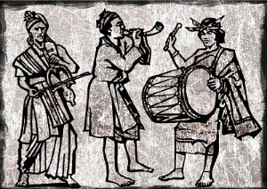

|
Para una fiesta de “Casarasiri” (matrimonio) una familia había contratado una banda de músicos. Esta tenía un contrato para todo el día, pero cuando llegó la noche, los músicos ya estaban borrachos, es que había tomado mucha cerveza, pero como estaban borrachos ya no les importaba nada. Los Músicos y el Encanto - A Los músicos se les apareció un hombre en su camino e hicieron un contrato para tocar en una ciudad. El dueño de la fiesta les daba más cerveza para que toquen. Ya era cerca a las 12:00 de la noche que decidieron irse. Se fueron tocando por la pampa, tomando y tocando. Así, tan borrachos en la noche se les apareció un hombre, para ellos era como si fuera de día, ese hombre les dijo: les voy a pagar todo lo que quieren señores músicos. Bueno, hicieron otro contrato. Entonces les hizo caminar por una ciudad, los músicos asombrados. Pero antes de entrar por la puerta uno de los músicos se quedó a orinar, cuando todos entraban, él se ha desesperado porque no acababa de orinar y de pronto se cerró la puerta, el músico empezó a tocar la puerta, pero nadie le habría, tanto fue que tocó se cansó, entonces furioso se decidió seguir caminando, mientras tanto se escuchaba la banda. Así él músico llegó a su casa en la madrugada, más tarde las esposas de los demás músicos preguntaban dónde están sus compañeros, él un poco mareado le dijo: se fueron a tocar a otro sitio, cuando estuvimos viniendo se hizo el contrato. Al saber la noticia todos los familiares decidieron ir al sitio, él los llevó, es aquí dijo, los familiares solo vieron un cerro y se escuchaba la banda de músicos, entre ellos se miraron. El músico dijo: esta parte del cerro era una puerta dorada y ahora no hay nada, sólo estás rocas nomás. Así, que durante una semana seguía tocando de día y noche, esto ha disminuido cada día poco a poco. Por este motivo se dice que cuando contratamos una banda de músicos se deben irse antes de medianoche a su comunidad, porque les puede coger el encanto. |
